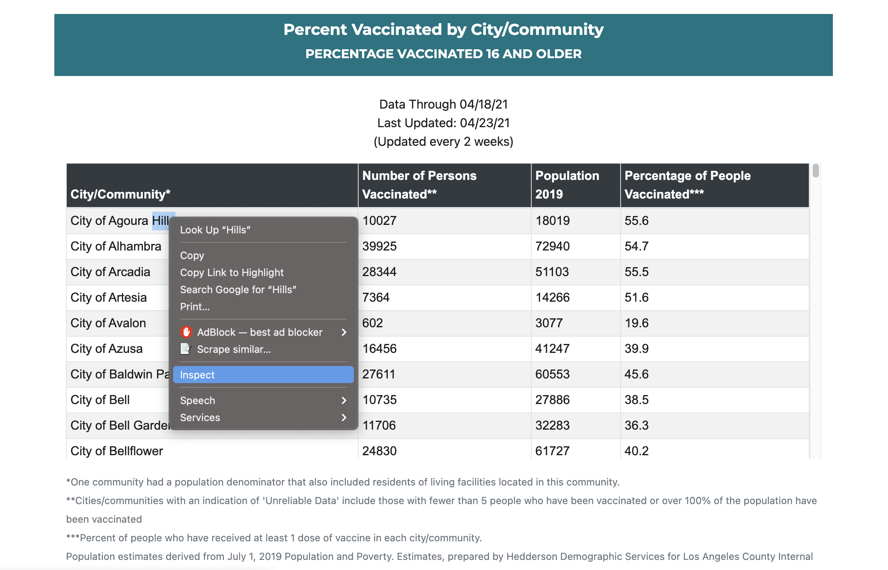
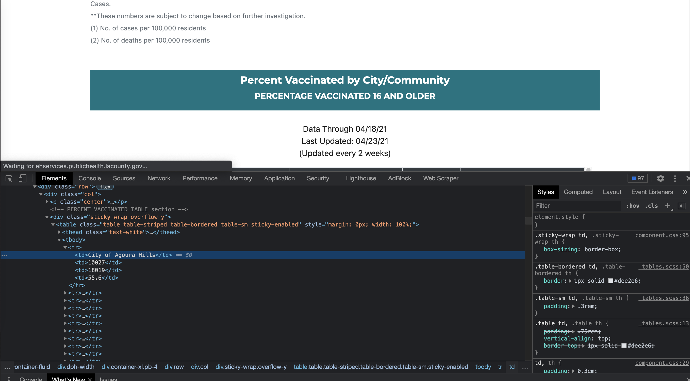
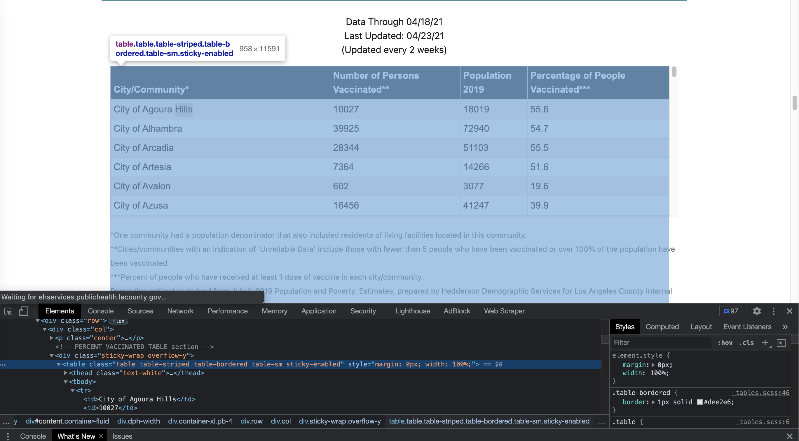
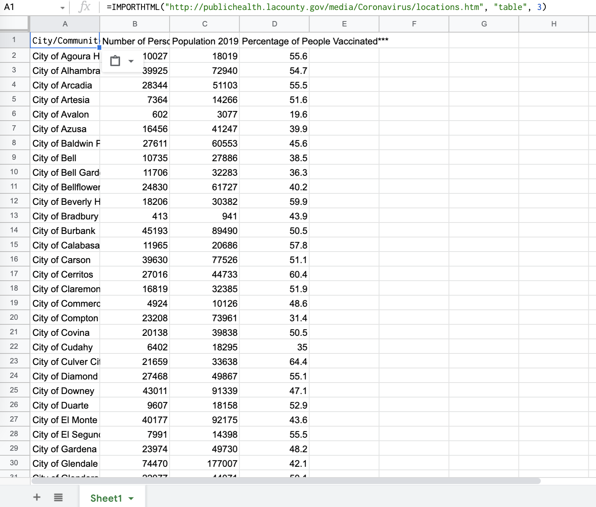
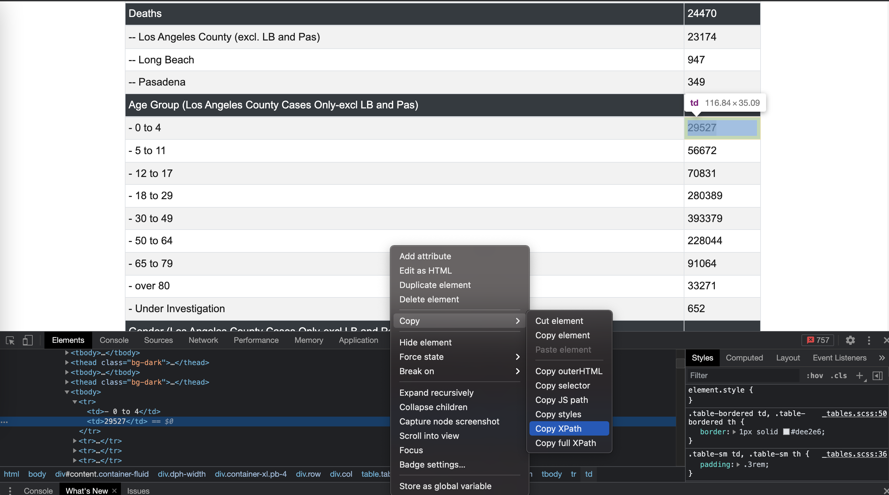

We'll learn some pretty neat tricks to grab data from websites using Google Sheets, without needing to write any code. You'll be able to link your Google spreadsheet to make live-updating charts on Datawrapper.
Firefox and Safari are OK, but the following examples and tools will be in Chrome.
You'll be able to extract specific information from a website and show it in your Google spreadsheet using some of Sheets’ special functions.
Functions do things. This one imports data from a table or list within an HTML page. We can use this function to write a scraper that imports a table of COVID-19 cases and deaths by city/community in L.A. County.
Here's an example: =IMPORTHTML("http://publichealth.lacounty.gov/media/Coronavirus/locations.htm", "table", 3)
table tag; the second looks for the ul or ol tag (unordered list or ordered list). Again this must be in quotation marks.Give your spreadsheet a title. For example, "L.A. County vaccinations by community."
Open up a new tab on your browser and go to this link: http://publichealth.lacounty.gov/media/Coronavirus/locations.htm#vaccinated
You'll see that this page has the tables we've been posting to our L.A. County coronavirus tally.
The
First, scroll down until you see the table titled "Percent Vaccinated by City/Community." This is the table we want to grab for this example.
Then, right click anywhere to bring up the menu and click "Inspect Element" as shown in the following screenshot:
This brings up the developer inspection window where we can inspect the HTML element for the table:
You will see the where tables are inserted into the web page. If you hover over where it says "table" in the inspection window, you should see the entire table highlighted like so:
Type =IMPORTHTML
Then fill in function with the arguments or parameters: =IMPORTHTML("http://publichealth.lacounty.gov/media/Coronavirus/locations.htm", "table", 3)
Press Enter.
Notice I used "3" for the index in the example above. That means I'm grabbing the third table in the webpage. You can play with the formula by changing the index number and see what table you pull up.
You can then upload a link to your spreadsheet in Datawrapper to create a live updating table or chart, like one below:
Now, you try! Try to grab Ventura County's COVID-19 case counts by ZIP Code/area here: https://www.venturacountyrecovers.org/
Google Sheets has a built-in function called ImportXML which can be used to scrape publicly available structured data from webpages. ImportXML imports data from any of various structured data types including XML, HTML, CSV, TSV, and RSS and ATOM XML feeds.
Here is the syntax for using this function: =IMPORTXML("url", "xpath_query")
Common XPath queries include:
For this example, let's use the IMPORTXML function to create a table of COVID-19 cases by age groups in L.A. County
Open up a new tab on your browser and go to this link: http://publichealth.lacounty.gov/media/Coronavirus/locations.htm#vaccinated
Again, you'll see that this page contains the tables we've been posting to our L.A. County coronavirus tally.
This time, lets say you're interested in creating a table that shows coronavirus case counts by 'Age Group' in L.A. County, which you can find in the top table below "Los Angeles County Case Summary."
Since you know that the age group categories remain constant, you're just interested in the latest case for those age groups.
Give your spreadsheet a title. For example, "L.A. County COVID-19 cases by age"
Create a table with with column headers and data you want to show, in this case the age groups the case counts
Once you're ready to populate the table with the numbers, go back to the LA County website with the data.
Once at the website, scroll down until you see the section "Age Group (Los Angeles County Cases Only-excl LB and Pas)." Your first thought might be to use the ImportHTML function to grab the table with the ages, but then you realize you can't use it to grab subsets of a larger table, such as in this case. So, for this example, we'll use the ImportXML function to select data we want. To do that, you'll need to grab the XPath of the data you want.
To do that, you can right click on the entry of the data you want from the table. So in this case, I want to grab the number of cases for the age group "Ages 0 to 4." After right-clicking, click "Inspect Element" option, which will open up Google Dev's console. You'll see in the console that the HTML element containing the number of interest is highlighted in Blue. You'll want to right click on that blue highlight, which gives you a menu. Go to "Copy" then from there, select the "Copy XPath" option, as shown in the following screenshot:
Once you've copied the XPath, go back to Google Sheets and fill out the ImportXML formula in the entry next to the "Ages 0 to 4" group.
So the formula should look like this: =importxml("http://www.publichealth.lacounty.gov/media/Coronavirus/locations.htm#vaccinated", "//*[@id='content']/div[1]/div[3]/div/div/table/tbody[4]/tr[1]/td[2]")
You can repeat the steps to get the XPath for each of the case numbers you want. Or to save you some time, just copy the first XPath to the remaining entries since the XPath structure will look similar. You'll see that the only change is the "tr" element for each category. In other words, the Xpath for the age group "5 to 11" is: "//*[@id='content']/div[1]/div[3]/div/div/table/tbody[4]/tr[2]/td[2]"
For the age group "12 to 17" the XPath is: "//*[@id='content']/div[1]/div[3]/div/div/table/tbody[4]/tr[3]/td[2]"